分别使用 C/C++、Java、Python 和 Haskell 实现快速排序和归并排序算法，对采用这几种语言实现的编程效率，程序的规模，程序的运行效率进行对比分析。
编译原理与设计-Lab1-语言认知实验
1 实验目的和内容
实验目的：了解程序设计语言的发展历史，了解不同程序设计语言的各自特点;感受编 译执行和解释执行两种不同的执行方式，初步体验语言对编译器设计的影响，为 后续编译程序的设计和开发奠定良好的基础。
实验内容： 分别使用 C/C++、Java、Python 和 Haskell 实现快速排序算法和归并排序，对采用这几种语言实现的编程效率，程序的规模，程序的运行效率进行对比分析。
实验说明：实验使用电脑参数如下

2 实验的具体过程和步骤
实验分三组：
- 普通情况(50000个范围在1~100000的不重复数)下不同语言的归并排序和快速排序
- 最坏情况：
- 小规模组(1000->1逆序排列)
- 大规模组(10000->1逆序排列)
快速排序的算法采用三数取最小数的算法，平均时间复杂度 $ O(nlogn) $ ，最坏时间复杂度 $ O(n^2) $
归并排序无论最好最坏情况，时间复杂度均为 $ O(nlog_2n) $
不同语言所使用的的算法完全一致，时间函数分别使用各语言提供的库函数
C语言
- 编译器版本及运行环境
1 | $ gcc --version |
源代码
1
2
3
4
5
6
7
8
9
10
11
12
13
14
15
16
17
18
19
20
21
22
23
24
25
26
27
28
29
30
31
32
33
34
35
36
37
38
39
40
41
42
43
44
45
46
47
48
49
50
51
52
53
54
55
56
57
58
59
60
61
62
63
64
65
66
67
68
69
70
71
72
73
74
75
76
77
78
79
80
81
82
83
84
85
86
87
88
89
90
91
92
93
94
95
96
97
98
99
100
101
102
103
104
105
106
107
108
109
110
111
112
113
114
115
116
117
//归并函数
void Merge(int *num, int start, int mid, int end){
int *temp = (int *)malloc((end-start+1) * sizeof(int));
int i = start;
int j = mid + 1;
int k = 0;
while (i <= mid && j <= end){
if (num[i] <= num[j]){
temp[k++] = num[i++];
}
else {
temp[k++] = num[j++];
}
}
while (i <= mid){
temp[k++] = num[i++];
}
while (j <= end){
temp[k++] = num[j++];
}
for (i = 0; i < k; i++){
num[start + i] = temp[i];
}
free(temp);
}
//归并排序
void MergeSort_UptoDown(int *num, int start, int end)
{
int mid = start + (end - start) / 2;
if (start >= end)
{
return;
}
MergeSort_UptoDown(num, start, mid);
MergeSort_UptoDown(num, mid + 1, end);
Merge(num, start, mid, end);
}
//分解函数
int partition(int arr[], int low, int high){
int key;
key = arr[low];
while(low<high){
while(low <high && arr[high]>= key )
high--;
if(low<high)
arr[low++] = arr[high];
while( low<high && arr[low]<=key )
low++;
if(low<high)
arr[high--] = arr[low];
}
arr[low] = key;
return low;
}
//快速排序
void quick_sort(int arr[], int start, int end){
int pos;
if (start<end){
pos = partition(arr, start, end);
quick_sort(arr,start,pos-1);
quick_sort(arr,pos+1,end);
}
return;
}
//装填函数
int fill(int arr[]){
if(O==1){
int cnt = 0;
FILE *fp = NULL;
fp = fopen("/Users/apple/Downloads/out.txt","r");
char buff[10];
while(fscanf(fp,"%s",buff)!=EOF){
arr[cnt++]=atoi(buff);
}
return cnt;
}
else{
for (int i = 0; i < N; ++i)
{
arr[i] = N - i;
}
return N;
}
}
int main(){
int arr[N+1];
int num = fill(arr);
struct timeval begintime,endtime;
gettimeofday(&begintime, NULL);
quick_sort(arr , 0 , num-1);
gettimeofday(&endtime, NULL);
printf("Size-%d / ", num);
printf("Qsort-C Running Time : %ld ms\n",1000*(endtime.tv_sec-begintime.tv_sec)+(endtime.tv_usec-begintime.tv_usec)/1000);
num = fill(arr);
gettimeofday(&begintime, NULL);
MergeSort_UptoDown(arr , 0 , num-1);
gettimeofday(&endtime, NULL);
printf("Size-%d / ", num);
printf("Mergesort-C Running Time : %ld ms\n",1000*(endtime.tv_sec-begintime.tv_sec)+(endtime.tv_usec-begintime.tv_usec)/1000);
}使用gcc编译器生成可执行文件：
1
gcc -o lab1_c lab1.c
在终端运行可执行文件6次
1
/.lab1_c
Java
编译器版本及运行环境
1
2
3
4
5
6$ Javac --version
javac 10.0.2
$ java --version
openjdk 10.0.2 2018-07-17
OpenJDK Runtime Environment 18.3 (build 10.0.2+13)
OpenJDK 64-Bit Server VM 18.3 (build 10.0.2+13, mixed mode)源代码
1
2
3
4
5
6
7
8
9
10
11
12
13
14
15
16
17
18
19
20
21
22
23
24
25
26
27
28
29
30
31
32
33
34
35
36
37
38
39
40
41
42
43
44
45
46
47
48
49
50
51
52
53
54
55
56
57
58
59
60
61
62
63
64
65
66
67
68
69
70
71
72
73
74
75
76
77
78
79
80
81
82
83
84
85
86
87
88
89
90
91
92
93
94
95
96
97
98
99
100
101
102
103
104
105
106
107
108
109
110
111import java.io.*;
public class Lab1 {
static int O = 2; //1为装填out.txt中的数据，2为装填逆序数组
static int N = 10000; //50000为实验1规模，10000为实验2-1规模，1000为实验2-2规模
public static void fill(int[] arr){
if (O==1) {
int cnt =0;
String pathname = "/Users/apple/Downloads/out.txt";
try (FileReader reader = new FileReader(pathname);
BufferedReader br = new BufferedReader(reader)
){
String line;
while ((line = br.readLine()) != null) {
arr[cnt++]=Integer.parseInt(line);
}
}catch (IOException e) {
e.printStackTrace();
}
}
else{
for (int i=0; i<N; i++) {
arr[i] = N-i;
}
}
}
public static void main(String[] args){
print5();
}
public static void print5(){
int[] arr = new int[N];
fill(arr);
long t = System.currentTimeMillis();
// System.out.println(arr[0]+" "+arr[N/2]+" "+arr[N-1]);
quick_sort(arr,0 , N-1);
// System.out.println(arr[0]+" "+arr[N/2]+" "+arr[N-1]);
System.out.println("QSort-Size-"+N+" / Java Running time : "+(System.currentTimeMillis()-t)+" ms");
fill(arr);
// System.out.println(arr[0]+" "+arr[N/2]+" "+arr[N-1]);
t = System.currentTimeMillis();
m_sort(arr,0 , N-1);
// System.out.println(arr[0]+" "+arr[N/2]+" "+arr[N-1]);
System.out.println("MergeSort-Size-"+N+" / Java Running time : "+(System.currentTimeMillis()-t)+" ms");
}
//分解函数
public static int partition (int []arr, int low, int high){
int key;
key = arr[low];
while(low<high){
while(low <high && arr[high]>= key )
high--;
if(low<high)
arr[low++] = arr[high];
while( low<high && arr[low]<=key )
low++;
if(low<high)
arr[high--] = arr[low];
}
arr[low] = key;
return low;
}
//快速排序
public static void quick_sort(int []arr, int start, int end){
int pos;
if (start<end){
pos = partition(arr, start, end);
quick_sort(arr,start,pos-1);
quick_sort(arr,pos+1,end);
}
return;
}
//归并排序
public static int[] m_sort(int[] a,int low,int high){
int mid = (low+high)/2;
if(low<high){
m_sort(a,low,mid);
m_sort(a,mid+1,high);
//左右归并
merge(a,low,mid,high);
}
return a;
}
//合并函数
public static void merge(int[] a, int low, int mid, int high) {
int[] temp = new int[high-low+1];
int i= low;
int j = mid+1;
int k=0;
// 把较小的数先移到新数组中
while(i<=mid && j<=high){
if(a[i]<a[j]){
temp[k++] = a[i++];
}else{
temp[k++] = a[j++];
}
}
// 把左边剩余的数移入数组
while(i<=mid){
temp[k++] = a[i++];
}
// 把右边边剩余的数移入数组
while(j<=high){
temp[k++] = a[j++];
}
// 把新数组中的数覆盖nums数组
for(int x=0;x<temp.length;x++){
a[x+low] = temp[x];
}
}
}使用java编译器(javac.exe)编译为字节码文件(.class)
1
javac Lab1.java
运行生成的字节码文件6次
1
java Lab1
python
解释器版本
1
2$ python --version
Python 2.7.16源代码
1
2
3
4
5
6
7
8
9
10
11
12
13
14
15
16
17
18
19
20
21
22
23
24
25
26
27
28
29
30
31
32
33
34
35
36
37
38
39
40
41
42
43
44
45
46
47
48
49
50
51
52
53
54
55
56
57
58
59
60
61
62
63
64
65
66
67
68
69
70
71
72
73
74
75
76
77
78
79
80
81
82
83
84
85
86
87
88
89
90
91
92
93
94
95
96
97
98
99
100import time
import sys
sys.setrecursionlimit(100000)
O = 1 //1为装填out.txt中的数据，2为装填逆序数组
N = 50000 //50000为实验1规模，10000为实验2-1规模，1000为实验2-2规
def merge(arr, l, m, r):
n1 = m - l + 1
n2 = r- m
L = [0] * (n1)
R = [0] * (n2)
for i in range(0 , n1):
L[i] = arr[l + i]
for j in range(0 , n2):
R[j] = arr[m + 1 + j]
i=0
j=0
k=l
while i < n1 and j < n2 :
if L[i] <= R[j]:
arr[k] = L[i]
i += 1
else:
arr[k] = R[j]
j += 1
k += 1
while i < n1:
arr[k] = L[i]
i += 1
k += 1
while j < n2:
arr[k] = R[j]
j += 1
k += 1
def mergeSort(arr,l,r):
if l < r:
m = int((l+(r-1))/2)
mergeSort(arr, l, m)
mergeSort(arr, m+1, r)
merge(arr, l, m, r)
def partition(arr,low,high):
key = arr[low]
while(low<high):
while low<high and arr[high] >= key:
high-=1
if low<high:
arr[low] = arr[high]
low+=1
while low<high and arr[low]<=key:
low+=1
if low<high:
arr[high] = arr[low]
high -= 1
arr[low] = key
return low
def q_sort(arr,start,end):
if start<end:
pos = partition(arr,start,end)
q_sort(arr,start,pos-1)
q_sort(arr,pos+1,end)
return arr
def quick_sort(arr):
return q_sort(arr,0,len(arr)-1)
def do():
if(O==1)
arr=[] #直接使用out.txt内数据初始化
else
for x in xrange(1,N):
arr[i]=N-x;
begintime=time.time()
quick_sort(arr)
endtime = time.time()
Running_time = (endtime-begintime)*1000
print("Qsort-python Running time : %f ms"%Running_time)
begintime=time.time()
mergeSort(arr,0,len(arr)-1)
endtime = time.time()
Running_time = (endtime-begintime)*1000
print("Msort-python Running time : %f ms"%Running_time)
arr = [0]*N
do()在终端运行6次
1
python lab1.py
Haskell
解释器版本
1
2$ runhaskell --version
runghc 8.8.2源代码
1
2
3
4
5
6
7
8
9
10
11
12
13
14
15
16
17
18
19
20
21
22
23
24
25
26
27
28
29
30
31
32
33
34
35
36
37
38
39
40import Text.Printf
import Control.Exception
import System.CPUTime
msort :: (Ord a) => [a] -> [a]
msort [] = []
msort [x] = [x]
msort xs = merge (msort xs1) (msort xs2)
where k = (length xs) `div` 2
xs1 = take k xs
xs2 = drop k xs
merge :: (Ord a) => [a] -> [a] -> [a]
merge [] b = b
merge a [] = a
merge a@(x:xs) b@(y:ys) | x >= y = x:(merge xs b)
| otherwise = y:(merge a ys)
qsort :: (Ord a) => [a] -> [a]
qsort [] = []
qsort (x:xs) = qsort [i | i <- xs, i >= x]
++ [x]
++ qsort [i | i <- xs, i < x]
main=do
start <- getCPUTime
let list =msort [] --实验1直接填入out.txt中数组，实验2-1为[1..1000]，实验2.2为[1..10000]
let a = maximum list
printf "Size %d "(a::Int)
end <- getCPUTime
let diff = (fromIntegral (end - start)) / (10^9)
printf "qsort Haskell Running time: %0.3f ms\n" (diff :: Double)
start <- getCPUTime
let list =qsort [] --实验1直接填入out.txt中数组，实验2-1为[1..1000]，实验2.2为[1..10000]
let a = maximum list
printf "Size %d "(a::Int)
end <- getCPUTime
let diff = (fromIntegral (start - end)) / (10^9)
printf "msort Haskell Running time: %0.3f ms\n" (diff :: Double)在终端运行6次
1
runhaskell lab1.hs
3 运行效果截图
1 常规组
50000个范围在1~1000000的不重复数
C
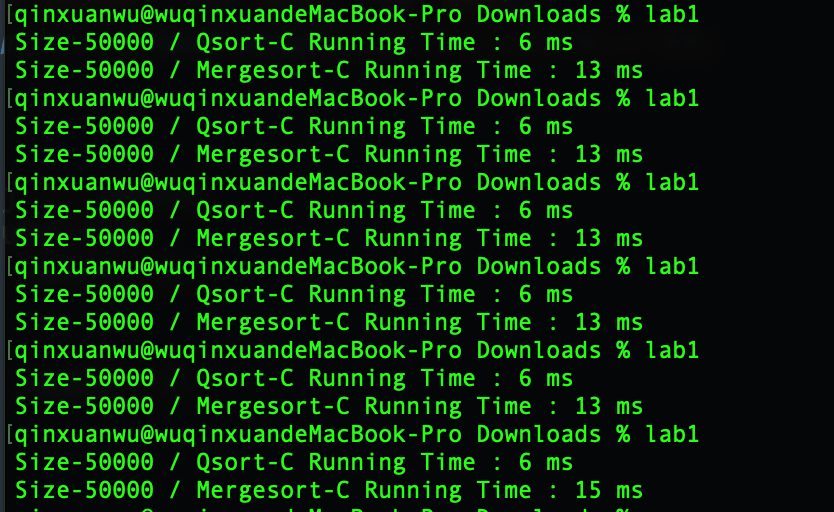快速排序平均运行时间：6.00 ms
归并排序平均运行时间：13.33 ms
JAVA
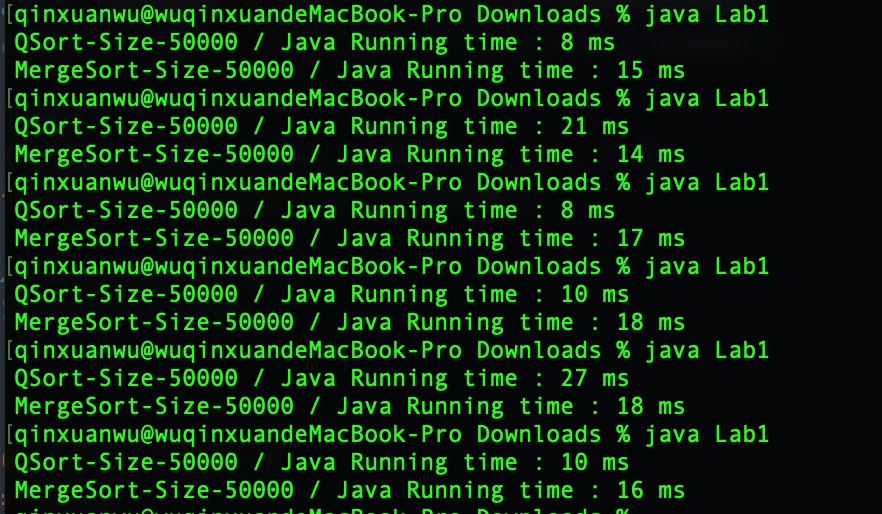快速排序平均运行时间：14.00 ms
归并排序平均运行时间：16.33 ms
python
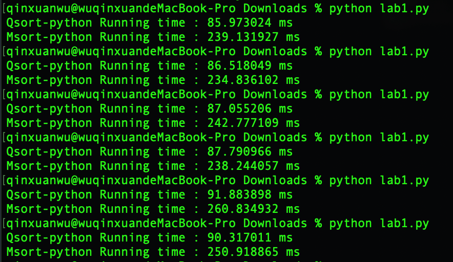快速排序平均运行时间：88.26 ms
归并排序平均运行时间：244.45 ms
Haskell
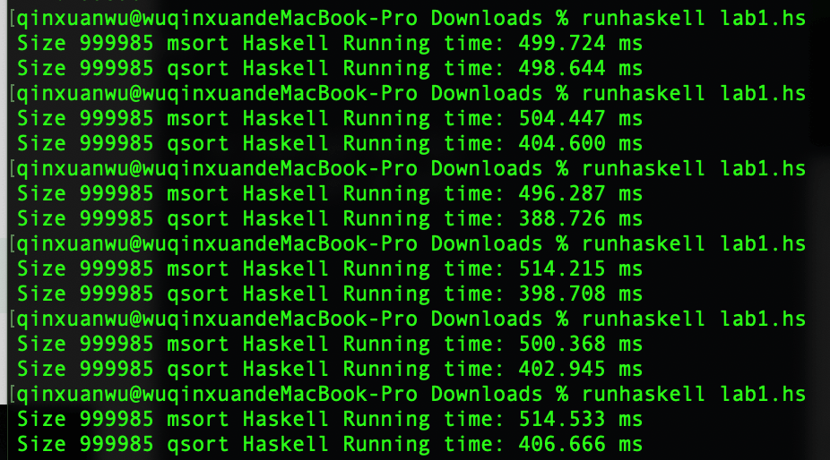因为笔者失误，此处Size应为50000，msort和qsort对应时间输出交换，即第一行为qsort运行时间，第二行为msort运行时间
快速排序平均运行时间：504.93 ms
归并排序平均运行时间：416.71 ms
2-1 小规模最坏数据
对逆序数组[1000,999,998,997,996,995,…,4,3,2,1]进行升序排列
C
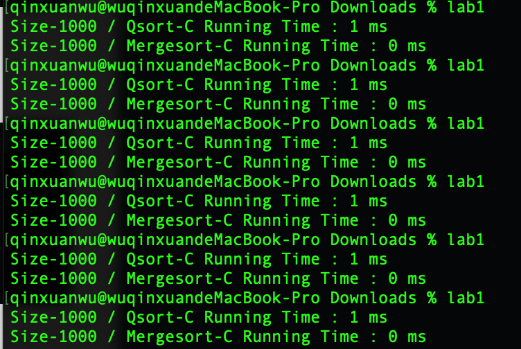快速排序平均运行时间：1 ms
归并排序平均运行时间：0 ms
Java
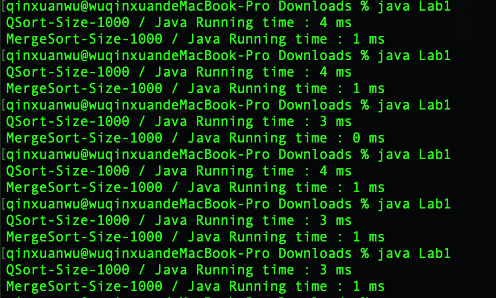快速排序平均运行时间：3.5 ms
归并排序平均运行时间：0.83 ms
python
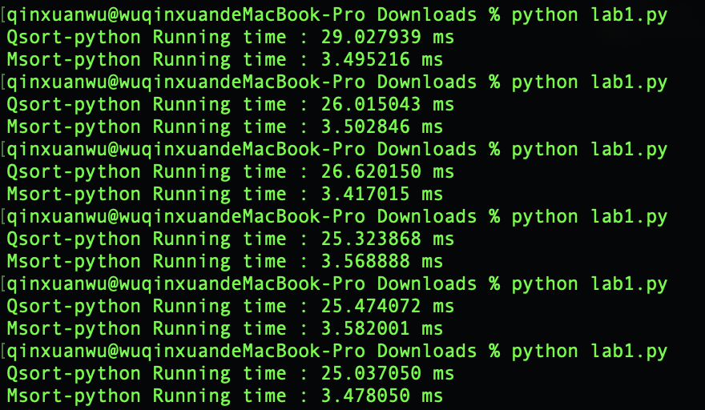- 快速排序平均运行时间：26.24 ms
- 归并排序平均运行时间：3.51 ms
Haskell
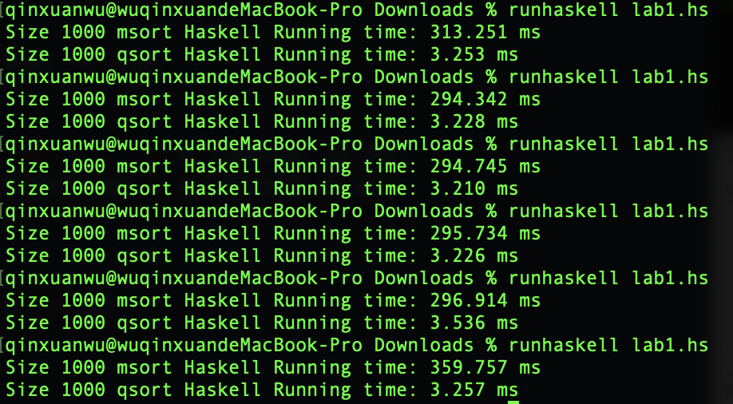因为笔者失误，msort和qsort对应时间输出交换，即第一行为qsort运行时间，第二行为msort运行时间
- 快速排序平均运行时间：309.12 ms
- 归并排序平均运行时间：3.285 ms
2-2大规模最坏数据
对逆序排列[10000,9999,9998,9997,9996,9995,…,4,3,2,1]进行升序排列
因为Haskell较易生成正序列表，所以对于Haskell对正序排列[1,2,3,4…9999,10000]进行降序排列
C
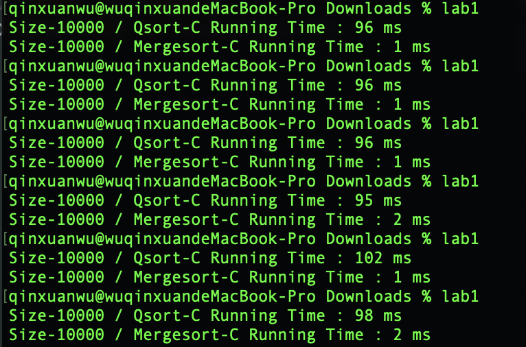- 快速排序平均运行时间：97.17 ms
- 归并排序平均运行时间：1.6 ms
Java
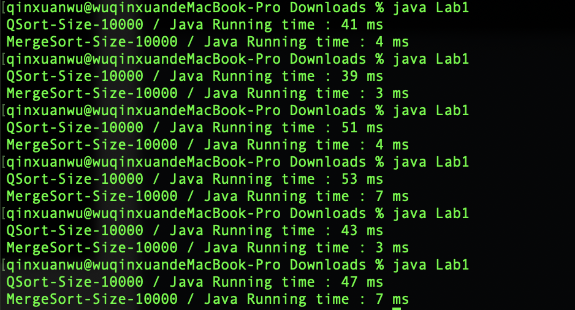- 快速排序平均运行时间：45.67 ms
- 归并排序平均运行时间：4.67 ms
Python
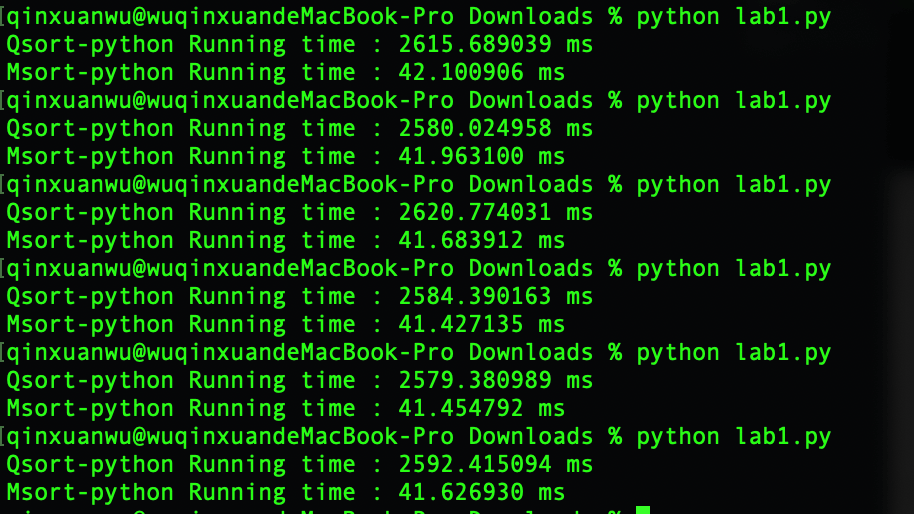- 快速排序平均运行时间：2595.45 ms -> 2.6s
- 归并排序平均运行时间：41.71 ms
Haskell
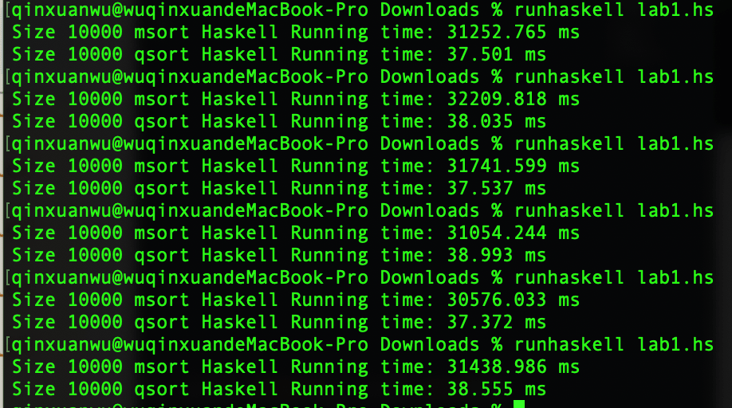因为笔者失误，msort和qsort对应时间输出交换，即第一行实为qsort运行时间，第二行为msort运行时间
- 快速排序平均运行时间：31378.91 ms -> 31.4s
- 归并排序平均运行时间：38.00 ms
4 语言易用性和程序规模对比分析
1 语言易用性
1 学习难度
Python<=Java<=C<<Haskell
| 语言 | 难度分析 |
|---|---|
| C | C作为大多数人编程的入门语言，先声夺人，字符串处理文件处理数组初始化等等基础操作，大多时候我都更习惯c的写法。链表与指针和内存管理是C的一大难以逾越的障碍 |
| Java | Java的语法大致类似C/C++，并且没有C中令人头疼的链表指针和内存操作，有自动内存管理，个人认为学过C再加上对面向对象的理解是非常容易上手Java的 |
| Python | Python近年被广泛推崇为儿童编程的入门语言，不一定说明它很简单，但至少说明它入门容易。Python中缩进作为格式化使得程序总体更简洁，但也使得在大项目中它的可维护性降低。Python更适合于小型项目，或者玩具，例如跑一个CNN。 |
| Haskell | 习惯了命令式语言，面对Haskell这样的纯函数式语言会陷入完全的不知所措。它是一种不同的概念、一种新的语言范式。需要用与我们的习惯所不同的方式开发应用，不同的方式组织应用，不同的方式扩展应用 |
2 语言的编程效率
个人认为编程分为两部分：初始编码+Debug
对于几种主流语言编程效率的普遍看法认为，python是效率最高的，C次之，Java最为啰嗦繁琐，而函数式编程语言较少用于工程。但我个人的经历里，不同语言在不同项目规模下各有所长。大型项目大多基于Java的相关框架，如果开发一个移动互联应用(上万行)，Java几乎可以说是没有敌手，它的啰嗦和繁琐减小了奇奇怪怪的bug发生的可能性，而在Java下继续前进还有Korlin，Swift等专门为应用开发而设计的语言。C/C++适合于开发小型项目(几千行)，比如小游戏或者解释器，使用C开发能够在某种程度上方便开发者最大程度提升程序的运行效率。至于Python，个人认为Python适合千行以内的代码规模，目前的学习中使用到Python的地方主要是人工智能和知识工程等课程，一个神经网络大致也就一百行代码，Python的相关库Numpy和TensorFlow在神经网络的应用中已经非常成熟。尽管Python在初始编码阶段能优雅简洁的一行代码完成一个复杂的功能，但在debug阶段Python也能让人一个头有两个大。使用Python中稍不注意就会有缩进造成的bug，怎么检查都难以寻觅其踪迹，可想如果代码规模稍大，该有多么头疼。
至于函数式编程，其思想和命令式编程有很大的不同。有人说，大部分人第一次使用Haskell或Ocaml时都完全的不知所措。在Haskell里，连分号都跟别人不一样。这并不是语法的问题；Haskell和ML语言完全基于一种不同的概念、一种新的语言范式。需要用不同的方式开发应用，不同的方式组织应用，不同的方式扩展应用。所以说它入门门槛高，适用范围不广，但是学界非常喜欢，其在数学逻辑证明上的优势是其他语言望尘莫及的。而非纯函数编程语言，如Lisp，其历史悠久，也曾在相关历史时期居于某些领域(人工智能)的统治地位。
总而言之，在不同的战场上使用相适合的工具是决定编程效率的关键。而就本次实验中的编程效率来说，仅仅实现一个快排算法，C，Java和Python并无太大差别，有差别也主要是个人对于不同语言熟练性造成的，Haskell的描述函数是什么而不是命令机器怎么做的优势高下立现，程序规模是其他的一半(统计见表4-3)
3 程序规模
Python>=C>Java>>Haskell
| 语言 | 快排总代码行数 | 实现快排函数行数 | 归并排序总代码行数 | 实现归并函数行数 |
|---|---|---|---|---|
| C | 46 | 24 | 41 | 41 |
| Java | 37 | 25 | 38 | 38 |
| Python | 46 | 21 | 45 | 45 |
| Haskell | 17 | 4 | 11 | 11 |
5 程序运行性能对比分析
(统一保留到小数点后一位)
快速排序
| 语言 | 常规组平均运行时间$O(nlogn)$ | 小规模最坏组平均运行时间$(O(n^2))$ | 大规模最坏组平均运行时间$(O(n^2))$ |
|---|---|---|---|
| C | 6.0 ms | 1.0 ms | 96.0 ms |
| Java | 14.0 ms | 2.4 ms | 41.8 ms |
| Python | 88.3 ms | 24.5 ms | 2396.9 ms |
| Haskell | 504.9 ms | 284.4 ms | 45812.2 ms |
- 在常规组和小规模最坏组的实验中，符合常规的认知，效率上C最优，Java次之；对于解释型语言，Python较快，Haskell非常耗时，尤其是在n为较大值的时间复杂度(O(n^2))下
- 在大规模最坏组的实验中，Java比C快了一半。猜测Java在递归过程中编译器进行了优化，因为本实验未涉及几种语言的内存使用测量，故作出此猜测。
归并排序
| 语言 | 常规组平均运行时间$O(nlogn)$ | 小规模组平均运行时间$O(nlogn)$ | 大规模组平均运行时间$O(nlogn)$ |
|---|---|---|---|
| C | 13.33 ms | 0.3 ms | 1.6 ms |
| Java | 16.3 ms | 0.8 ms | 4.7 ms |
| Python | 244.5 ms | 3.5 ms | 41.7 ms |
| Haskell | 416.7 ms | 3.2 ms | 38.0 ms |
归并排序是一种稳定排序，对于最好/最坏/平均都有 $ O(nlogn) $ 复杂度，在实验中确实可以得到体现；效率上以上是C最优，Java次之；对于解释性语言，常规组(规模50000)
在小规模组(规模1000)和大规模组(规模10000)的实验中，可以看到Haskell比Python有了细微的优势。但在常规组(规模50000)的实验中，python又超过了Haskell。笔者另外增加了规模80000和100000的测试：
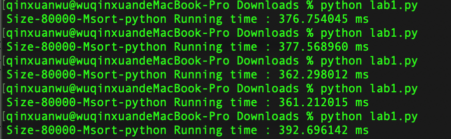 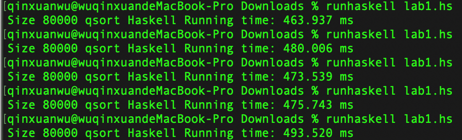- 80000规模python归并排序5次平均运行时间：374.1 ms；
- 80000规模haskell归并排序5次平均运行时间：477.3 ms;
- 100000规模python归并排序5次平均运行时间：474.1 ms;
- 100000规模haskell归并排序5次平均运行时间：588.2 ms;
可以看出随着数据规模增大，python又较haskell具有了优势。
6 实验心得体会
- 我想，大多数人的对编程语言的学习都有一个刚入门时遇到一些困难，然后逐渐轻松，云开日朗，但是之后又遇到一个巨大的瓶颈，有可能是诸如指针这样的概念，也有可能是无关语法的对算法的理解限制住了编程能力的提高。差不多所有学过编程的人都有过遇到困难的经历。我们在学了一些基本知识后，必然会遇到一些公认的概念上的关口，比如指针。很少人能轻松的掌握它们。大多数人，比如我，则需要不断的练习和参考例子来理解什么是指针、为什么它们很重要。
- 对于同一种思维方式的语言，如命令式语言，一旦学会几种语言后，所有的语言都开始看起来都很相似，虽然有细微差别，但入门都会相对容易。做移动互联的大作业的时候，Dart、Swift或者Kotlin的语法，它们都存在共通的地方；开发个人博客的时候，利用掌握的html我们也能把Jade、ejs的代码改得更符合我们的需求。Python的人学习Ruby可能不会遇到太多的问题，知道Java的人学习C#会感到很熟悉。不错，也有意外的地方。Ruby爱好者在学习Python时会对它的comprehension感到吃惊，Java用户会对C#里的委托摸不着头脑。还是那句话，如果只瞟一眼，它们都很相似。
- 但是第一次使用Haskells时我陷入了不知所措。看官方代码的一头雾水和无论如何都无法让自己的程序正确运行的焦灼不安。这并不是语法的问题；Haskell和ML语言完全基于一种不同的概念、一种新的语言范式。需要用不同的方式开发应用，不同的方式组织应用，不同的方式扩展应用。而我还是习惯性的在haskell中输入
let list = quicksort [1..10]这样的命令，期望它运行。很多这样的新概念都具有不可思议的强大力量。Haskell里的Monads是跟指针一样基础且强大的概念。所以，跟学了Java后再学C#不一样，有志向学习函数式语言的人需要往回走的更远，去学习更加基础的概念后才能接下去学习。就像是完全再学习一次 - 说说细节上的收获，在进行大规模的实验时，我发现python、Java和Haskell都有对递归深度限制，但是C几乎是完全自由没有任何限制的。在运行速度上，解释执行的Python和Haskell自然无法与编译执行的C和Java比，
- Java虚拟机的启动占用一定的时间，所以在数据规模增后的快排实验中，Java要比C快了一半。